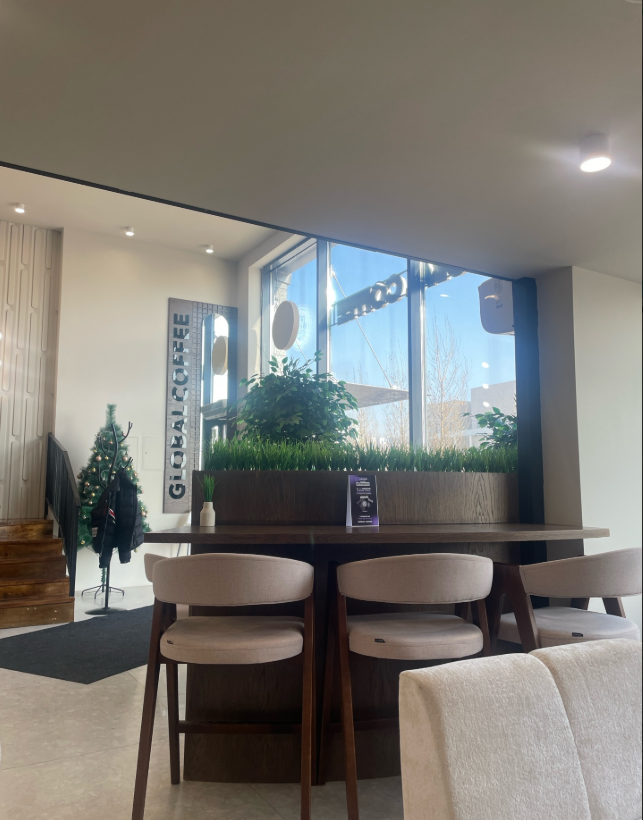

Наша философия
Мы открыли двери Global Coffee в самом сердце столицы, на улице Туркестан, 4Б, чтобы предложить жителям города идеальное место для встреч, работы и отдыха. Наш шеф-бариста всегда говорит: Кофе объединяет людей лучше любых слов
. Мы действительно верим, что каждая чашка способна сделать день немного ярче и теплее. Мы работаем ежедневно с 08:00 до 24:00, чтобы вы могли насладиться любимым напитком как ранним утром перед работой, так и поздним вечером.
